- Interview
- With Andrew Lyman
My background in photography really began when my dad would bring home prints of family pictures from Eckerd's... or maybe that's just my first experience of photography.I took pictures like everyone else until I got a Nikon camera in high school. I'd always take pictures of myself and my friends for the internet. I used photography and the internet to create an identity that I couldn't necessarily embody in public during high school. I really didn't consider it as my art form until later after I took a black and white film class during my second year of college, which made me change my major from Painting to Photography.I used my dad's old film camera that he took my baby pictures with. Since then, almost 5 years ago, I've been obsessively making photographs of my life and my friends.
We are so different down here. We just have a totally different experience. We navigate a world that has a completely different history and social atmosphere than anywhere else. Artists in the South have so many phenomena to create new language for through our work. What makes us unique is our way of living and what tools we have to create work that reflects it.
It's queer in all of those ways. My work is a product of my growth as a queer person.I constantly take pictures of everything around me, especially portraits of my friends. My photographs document a period of time when my friends and I have learned how to express our gender, our politics, and our freedom, while in turn, shedding remnants of heteronormative structures that have dominated a big part of our Southern upbringing.So yeah, the work is rooted in queerness and expression, growth, the passage of time.
Aside from listening to Solange every day, I've been trying to keep up with NPR on the 88.5 station. Their coverage of post-election current affairs has been helpful and enlightening. I recently watched/listened to the Nina Simone documentary on Netflix again while working in my studio, which affected me in a whole new way since the first time I watched it over a year ago. I also always put on Miranda July audiobooks in the background when I need to occupy my mind and edit photos.
My Dad, Nan Goldin, Larry Clark, Wolfgang Tillmans, Kehinde Wiley, Molly Matalon